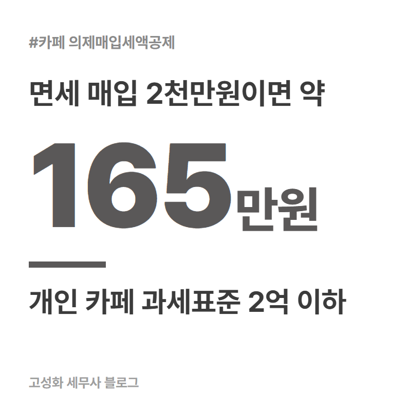
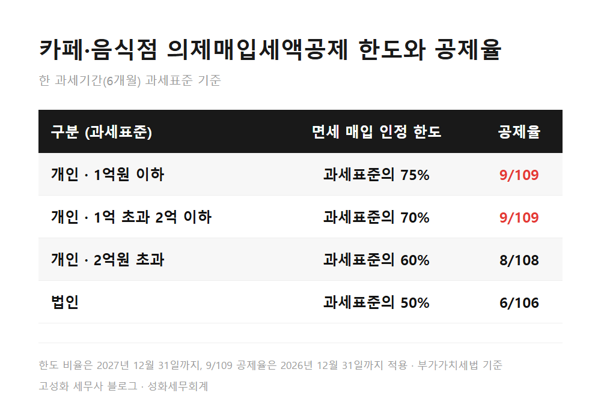

← 세무칼럼 목록
부가세·개인사업자

카페 의제매입세액공제 우유 증빙, 확인할 5가지

카페에서 쓰는 우유는 부가세가 면제되는 품목이라, 증빙만 제대로 받아두면 매입액의 109분의 9를 부가세에서 빼주는 의제매입세액공제를 받을 수 있습니다. 개인 카페이고 6개월 과세표준이 2억원 이하일 때 기준입니다.
다만 일반과세자여야 하고, 증빙 형태와 한도가 맞아야 실제로 공제가 들어갑니다.
우유를 매주 박스째 들이는데 신고서에 공제가 거의 안 잡혀 있다면, 대개 아래 다섯 가지 중 어딘가에 걸려 있습니다.
1. 일반과세자인지부터 보세요
한눈에 보기

정리하면
카페 의제매입세액공제는 일반과세자인지, 면세 품목인지, 증빙이 무엇인지, 한도 안인지, 신고서에 실제로 넣었는지 다섯 가지가 모두 맞아야 들어갑니다.
저는 우유·과일 같은 재료는 사업용 카드 한 장으로만 결제하시길 권해드립니다. 나중에 골라내기가 훨씬 쉬워집니다.
지금 맡기신 세무사가 있으셔도 괜찮습니다. 지난 신고서에 의제매입이 제대로 잡혔는지만 따로 봐드릴 수 있으니, 신고서 한 장 들고 편하게 문의해주세요.
본문 전체와 근거 조문은 블로그에서 확인하실 수 있습니다.